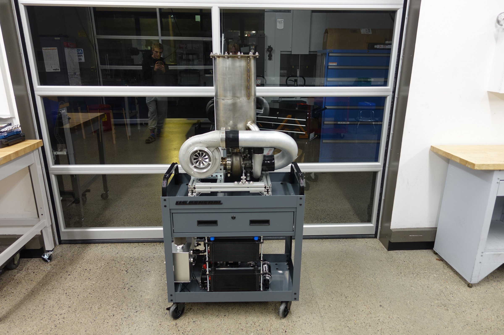

Featured Project
Typheonix - A Compound-Turbocharger Based Afterburning Turbojet Engine
Independent engineering project involving turbomachinery, thermodynamic cycle analysis, CFD, and exhaust nozzle design.

Engineering Analysis
Engineering analysis and simulation are used to evaluate system performance and guide the design process.


System Architecture
A high level overview of the basic layout and design of the Typheonix Engine architecture.